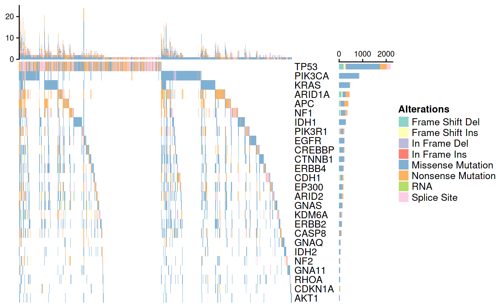

vignettes/Figure2_OncoPrint.Rmd
Figure2_OncoPrint.RmdLoad packages:
library(MultiAssayExperiment) library(curatedTCGAData) library(TCGAutils) library(ComplexHeatmap) library(RColorBrewer) library(TxDb.Hsapiens.UCSC.hg18.knownGene) library(TxDb.Hsapiens.UCSC.hg19.knownGene) library(BiocFileCache) library(org.Hs.eg.db) library(GenomeInfoDb)
pancanmut <- curatedTCGAData::curatedTCGAData("*", "Mutation", dry.run = FALSE) TCGAutils::sampleTables(pancanmut) pancanmut <- TCGAutils::TCGAprimaryTumors(pancanmut)
Set a data folder
datafolder <- "../inst/data"
Checkpoint
afile <- file.path(datafolder, "primarypancanmutations.rda") if (!file.exists(afile)) save(pancanmut, file = afile) load(afile)
32 types of cancer – MESO does not have a mutation dataset
mutnames <- grep(glob2rx("*_Mutation-*"), names(pancanmut), value = TRUE) mutlist <- experiments(pancanmut) mutlist <- lapply(mutlist, function(mutassay) { if (all(genome(mutassay) == "19")) genome(mutassay) <- paste0("hg", genome(mutassay)) else genome(mutassay) <- TCGAutils::translateBuild(genome(mutassay)) seqlevelsStyle(mutassay) <- "UCSC" rownames(mutassay) <- mcols(mutassay)$Hugo_Symbol somaticnonsilent <- mcols(mutassay)$Mutation_Status == "Somatic" & mcols(mutassay)$Variant_Classification != "Silent" mutassay <- mutassay[somaticnonsilent, ] Variants <- mcols(mutassay)$Variant_Classification Variants <- gsub("_", " ", Variants) Variants <- ifelse(Variants == "R", "RNA", Variants) mcols(mutassay)$Variant_Classification <- Variants mutassay })
Filter variants that are low in counts
muttable <- table(unlist( lapply(mutlist, function(x) mcols(x)$Variant_Classification) )) varikeep <- muttable / sum(muttable) > 0.001 cbind.data.frame(muttable, keep = varikeep, row.names = NULL)
## Var1 Freq keep
## 1 3'UTR 67 FALSE
## 2 5'Flank 18 FALSE
## 3 5'UTR 42 FALSE
## 4 De novo Start InFrame 21 FALSE
## 5 De novo Start OutOfFrame 160 FALSE
## 6 Frame Shift Del 32765 TRUE
## 7 Frame Shift Ins 14757 TRUE
## 8 IGR 105 FALSE
## 9 In Frame Del 7539 TRUE
## 10 In Frame Ins 1597 TRUE
## 11 Indel 13 FALSE
## 12 Intron 909 FALSE
## 13 Missense 44 FALSE
## 14 Missense Mutation 862102 TRUE
## 15 Nonsense Mutation 66349 TRUE
## 16 Nonstop Mutation 934 FALSE
## 17 Read-through 10 FALSE
## 18 RNA 36308 TRUE
## 19 Splice Site 27780 TRUE
## 20 Splice Site Del 5 FALSE
## 21 Splice Site Ins 3 FALSE
## 22 Splice Site SNP 236 FALSE
## 23 Targeted Region 8 FALSE
## 24 Translation Start Site 771 FALSECheckpoint
afile <- file.path(datafolder, "validvariants.rda") if (!file.exists(afile)) save(validvariants, file = afile) load(afile)
LiftOver genomes from hg18 to hg19
lifturl <- "http://hgdownload.cse.ucsc.edu/goldenpath/hg18/liftOver/hg18ToHg19.over.chain.gz" bfc <- BiocFileCache() qfile <- bfcquery(bfc, "18to19chain", exact = TRUE)[["rpath"]] cfile <- if (length(qfile) && file.exists(qfile)) { bfcquery(bfc, "18to19chain", exact = TRUE)[["rpath"]] } else { bfcadd(bfc, "18to19chain", lifturl) } chainfile <- file.path(tempdir(), gsub("\\.gz", "", basename(cfile))) R.utils::gunzip(cfile, destname = chainfile, remove = FALSE) chain <- suppressMessages( rtracklayer::import.chain(chainfile) ) mutlift <- lapply(mutlist, function(mutassay) { if (all(genome(mutassay) == "hg18")) { ranges19 <- rtracklayer::liftOver(rowRanges(mutassay), chain) mutassay <- mutassay[as.logical(lengths(ranges19))] rowRanges(mutassay) <- unlist(ranges19) genome(mutassay) <- rep("hg19", length(genome(mutassay))) } seqlevelsStyle(mutassay) <- "NCBI" mutassay })
## Discarding unchained sequences: NT_113923Generate references from respective annotation packages
gn18 <- genes(TxDb.Hsapiens.UCSC.hg18.knownGene)
## 379 genes were dropped because they have exons located on both strands
## of the same reference sequence or on more than one reference sequence,
## so cannot be represented by a single genomic range.
## Use 'single.strand.genes.only=FALSE' to get all the genes in a
## GRangesList object, or use suppressMessages() to suppress this message.gn18 <- keepStandardChromosomes(granges(gn18), pruning.mode="coarse") seqlevelsStyle(gn18) <- "NCBI" names(gn18) <- AnnotationDbi::mapIds(org.Hs.eg.db::org.Hs.eg.db, names(gn18), keytype = "ENTREZID", column = "SYMBOL")
## 'select()' returned 1:1 mapping between keys and columnsgn18 <- sort(gn18) gn18 <- unstrand(gn18) gn19 <- genes(TxDb.Hsapiens.UCSC.hg19.knownGene)
## 403 genes were dropped because they have exons located on both strands
## of the same reference sequence or on more than one reference sequence,
## so cannot be represented by a single genomic range.
## Use 'single.strand.genes.only=FALSE' to get all the genes in a
## GRangesList object, or use suppressMessages() to suppress this message.gn19 <- keepStandardChromosomes(granges(gn19), pruning.mode="coarse") seqlevelsStyle(gn19) <- "NCBI" names(gn19) <- AnnotationDbi::mapIds(org.Hs.eg.db::org.Hs.eg.db, names(gn19), keytype = "ENTREZID", column = "SYMBOL")
## 'select()' returned 1:1 mapping between keys and columnsgn19 <- sort(gn19) gn19 <- unstrand(gn19) mutlist2 <- lapply(mutlist, function(ragex) { rowRanges(ragex) <- unstrand(rowRanges(ragex)) seqlevelsStyle(ragex) <- "NCBI" ragex })
The variant function tallies the number of non-silent mutations. We use qreduceAssay to perform the reduction and calculation of non-silent mutations based on the gene regions in the genome.
variant_fun <- function(scores, ranges, qranges) { as.numeric(any(scores != "Silent")) } mut3 <- lapply(mutlist2, function(mutassay) { gen <- unique(genome(mutassay)) if (identical(gen, "hg19")) gn <- gn19 else if (identical(gen, "hg18")) gn <- gn18 resov <- qreduceAssay(mutassay, gn, variant_fun, "Variant_Classification", background = 0) rownames(resov) <- names(gn) resov[!is.na(rownames(resov)), ] }) allgenes <- Reduce(intersect, lapply(mut3, rownames)) genomut <- vapply(mutlist2, function(x) unique(genome(x)), character(1)) mut4 <- lapply(mut3, function(mutmat) { mutmat[allgenes, ] })
afile <- file.path(datafolder, "mutationspancan.rda") if (!file.exists(afile)) save(mut4, file = afile) load(afile)
Find the top genes where we get the most non-silent mutations.
mut18 <- mut4[genomut == "hg18"] mut19 <- mut4[genomut == "hg19"] mut18full <- do.call(cbind.data.frame, mut18) mut19full <- do.call(cbind.data.frame, mut19) tot18 <- rowSums(mut18full) tot19 <- rowSums(mut19full) allgenes <- union(names(tot18), names(tot19)) allsums <- vapply(allgenes, function(g) sum(tot18[g], tot19[g], na.rm = TRUE), double(1L)) topgenes <- head(sort(allsums, decreasing = TRUE), 25) genesoi <- c("CASP8", "CDKN1A", "EP300", "CREBBP", "ARID1A", "ARID2", "KDM6A", "TP53", "NF1", "NF2", "CDH1", "APC", "PIK3R1", "IDH1", "IDH2", "GNA11", "GNAQ", "GNAS", "EGFR", "ERBB2", "ERBB4", "KRAS", "PIK3CA", "RHOA", "AKT1", "CTNNB1")
afile <- file.path(datafolder, "genesoi.rda") if (!file.exists(afile)) save(genesoi, file = afile) load(afile)
Generate a list of funcitons that target each mutation variant. Use the list of functions to tally up the number of variants per gene.
mutlist18 <- mutlist2[genomut == "hg18"] mutlist19 <- mutlist2[genomut == "hg19"] simplify_funs <- lapply(validvariants, function(variant) { args <- alist(scores =, ranges =, qranges =) args <- as.pairlist(args) body <- substitute({ as.numeric(any(S4Vectors::`%in%`(scores, z))) }, list(z = variant)) eval(call("function", args, body)) } ) simpres18 <- lapply(simplify_funs, function(variant_fun) { lapply(mutlist18, function(mutmat) { gn <- gn18[match(genesoi, names(gn18))] res <- qreduceAssay(mutmat, gn, variant_fun, "Variant_Classification", background = 0) rownames(res) <- names(gn) res[!is.na(rownames(res)), ] }) }) simps18 <- lapply(simpres18, function(x) do.call(cbind.data.frame, x)) simpres19 <- lapply(simplify_funs, function(variant_fun) { lapply(mutlist19, function(mutmat) { gn <- gn19[match(genesoi, names(gn19))] res <- qreduceAssay(mutmat, gn, variant_fun, "Variant_Classification", background = 0) rownames(res) <- names(gn) res[!is.na(rownames(res)), ] }) }) simps19 <- lapply(simpres19, function(x) do.call(cbind.data.frame, x)) list_mats <- Map(cbind, simps18, simps19) list_mats2 <- lapply(list_mats, data.matrix)
afile <- file.path(datafolder, "list_mats2.rda") if (!file.exists(afile)) save(list_mats2, file = afile) load(afile)
Checkpoint - load variants
Create a list of functions for input for the ComplexHeatmap plotting function.
qualcolors <- RColorBrewer::brewer.pal(n = length(validvariants), 'Set3') colors <- setNames(qualcolors, validvariants)
mutfuns <- lapply(colors, function(couleur) { args <- alist(x =, y =, w =, h =) args <- as.pairlist(args) body <- substitute({ grid::grid.rect(x, y, w, h, gp = grid::gpar(fill = z, col = NA)) }, list(z = couleur)) eval(call("function", args, body)) }) background <- function(x, y, w, h) grid::grid.rect(x, y, w, h, gp = grid::gpar(fill = "#FFFFFF", col = "#FFFFFF")) mutfuns2 <- c(background = background, mutfuns)
afile <- file.path(datafolder, "mutfuns2.rda") if (!file.exists(afile)) save(mutfuns2, file = afile) load(afile)
Plot the oncoPrint function:
ll <- IRanges::LogicalList(lapply(list_mats2, function(y) colSums(y) == 0)) matlog <- do.call(rbind, lapply(ll, unname)) allzero <- apply(matlog, 2, all) list_mats3 <- lapply(list_mats2, function(x) x[, !allzero]) ComplexHeatmap::oncoPrint( list_mats3, alter_fun = mutfuns2, col = colors, show_pct = FALSE, use_raster = FALSE )
## All mutation types: Frame Shift Del, Frame Shift Ins, In Frame Del, In
## Frame Ins, Missense Mutation, Nonsense Mutation, RNA, Splice Site
Saving to PDF format